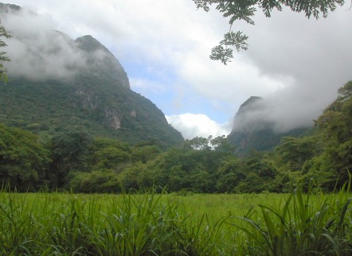

Zona Productora de Agua Apagüiz

Está situada alrededor de a 20 minutos de la zona sureste de Danlí. Dentro
de los límites de estos espacios protegidos se realizan observación de aves,
bichos, anfibios, rastreros, mamíferos, montañismo, cabalgatas, senderismo
y excursiones. Muy cerca de ahí igualmente se halla el edificio que funciona
como la Alcaldía Municipal de El Paraíso, lugar donde los excursionistas
aprovechan para sacarse fotos en su portada y jardines. Uno de los lugares
más dinámicos atractivos adentro de la localidad es la Casa de la Cultura
de El Paraíso.